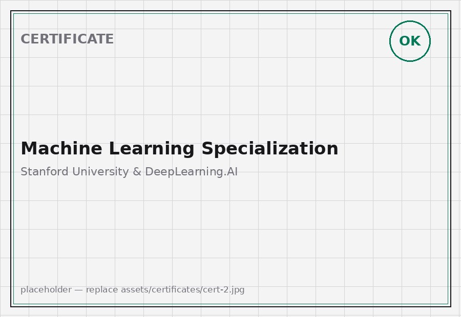
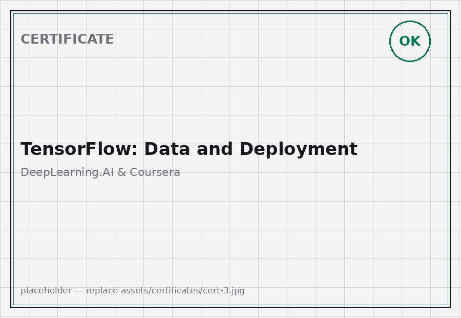
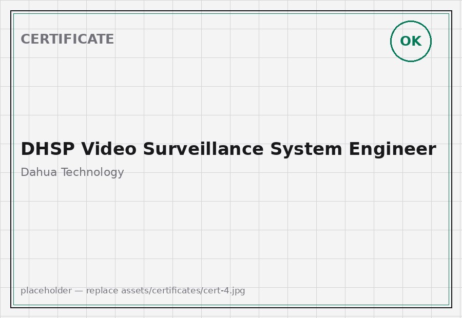
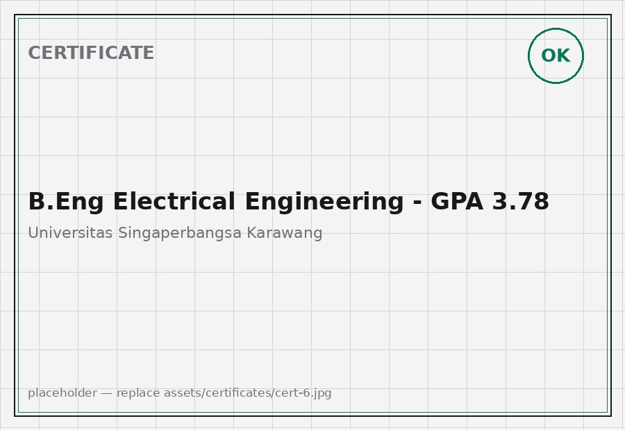

RYAS RAFI KARIM
Career Timeline
BANGKIT ACADEMY — DISTINCTION GRADUATE
Machine Learning cohort under Google, Tokopedia, Gojek & Traveloka. Built Waste Wizard, a CNN municipal waste-classification mobile app reaching 95% validation accuracy, and earned the Google TensorFlow Developer Certificate in a top-10% graduating cohort.
JAKARTA SMARTEYE — 3,000+ CAMERAS
AI Engineer maintaining and tuning License Plate Recognition models across 3,000+ operational Jakarta CCTV feeds at 99.2% accuracy — plus waste-segmentation and crowd analytics for the MBG program — over three high-availability Linux production tiers.
FLEET VISION ACROSS 26 MARINE VESSELS
AI Engineer & Project Lead deploying bridge-crew surveillance across 26 commercial tugboats: 360° panorama vision, AdaFace IR-101 crew identification, danger-zone intrusion alerts, and Teltonika satellite GPS telematics with automated Telegram dispatch.
DRAWING CONVERTER — WIRE-HARNESS VECTORS
Engineered the automated CAD wire-harness drawing converter: schematic parsing, vector skeletonization, and Delphi/Aptiv catalog cross-referencing that extracts terminals, seals, and BoQ tables — cutting engineering turnaround from 3 days to under 5 minutes.
SENTINEL AI — HULL NUMBER RECOGNITION
Two-stage detection and OCR reading vessel hull numbers (No. Lambung) on dusty mining haul roads — 90,722+ tons of haulage tracked across 41 hull classes with calibrated ground-speed radar and zero-drop /dev/shm frame buffering.
Certificates




Deployments on Video
Tech Stacks & Domains
Computer Vision & Deep Learning
High-throughput detection, segmentation, optical character recognition & biometrics.
Optimization & High-Throughput Serving
Model compression, FP16/INT8 hardware compilation & low-latency RESTful APIs.
Generative AI, Agents & Vector RAG
Local LLM runtimes, multi-step tool execution graphs & hybrid semantic retrieval.
Edge AI, Embedded & IoT Telematics
On-device edge computing, satcom sensor telemetry & automated incident dispatch.
Linux OS & Cloud Infrastructure
Production Linux administration, containerization, CI/CD pipelines & reliability.
Languages & Schematic Engineering
Vector graph topological parsing, scientific computing & CAD blueprint automation.